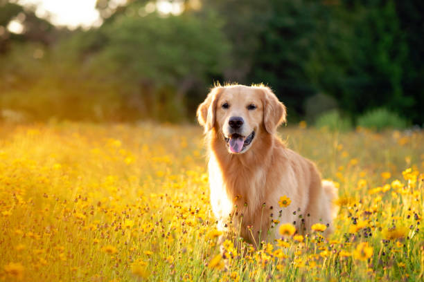

GenAI with LangchainGo & Ollama üöÄ
Running AI Models Locally in Go
Golang Meetup | Helsinki
Maryum Hamid
Introduction
Software Engineer at Zalando
Preowned premise of Zalando
C++ -> Python -> Go
Ollama
Docker for LLMs
Fully local inference
Works offline (perfect for privacy-focused applications)
Written in Go, uses llama.cpp

Ollama demo
> ollama pull llama3.2
> ollama run llama3.2
>>> What is Ollama?
>>> /bye
Supported Models
Llama by Meta
Mistral
Gemma by Google
Phi by Microsoft
Qwen by Alibaba
DeepSeek
Ollama APIs
curl -X POST http://localhost:11434/api/generate \
-H "Content-Type: application/json" \
-d '{
"model": "llama3.2",
"prompt": "Please, briefly compare Java and Go",
"stream": false
}'
OpenAI-compatible: /v1/chat/completions
LangChainGo
Framework for working with LLMs
Inspired by LangChain (Python)
Works with multiple LLMs
go get github.com/tmc/langchaingo
Basic Example
package main
import (
"context"
"fmt"
"github.com/tmc/langchaingo/llms/ollama"
"log"
)
func main() {
llm, err := ollama.New(ollama.WithModel("mistral:latest"))
if err != nil {
log.Fatal(err)
}
resp, err := llm.Call(context.Background(), "Tell me a joke about Golang.")
if err != nil {
log.Fatal(err)
}
fmt.Println(resp)
}
Ollama + LangchainGo
func main() {
model, err := ollama.New(ollama.WithModel("mistral:latest"))
if err != nil {
log.Fatal(err)
}
reader := bufio.NewReader(os.Stdin)
fmt.Println("ü§ñ Chatbot is running. Type 'exit' to quit.")
for {
fmt.Print("You: ")
input, _ := reader.ReadString('\n')
input = strings.TrimSpace(input)
if input == "exit" {
break
}
response, err := model.Call(context.Background(), input, llms.WithTemperature(0.7))
if err != nil {
log.Fatal(err)
}
fmt.Println("Ollama:", response)
}
}
Memory (Remembers Past Messages)
LLMs to remember past interactions
Maintains Conversation Context
Buffer Memory, Conversation Memory, Vector-based Memory
Retrieval-Augmented Generation (RAG)
Enhances AI by combining “retrieval” + “generation”.
Responses by retrieving relevant external data
Works with databases, APIs, and vector stores to fetch the most relevant data.
Image Recognition
llm, err := ollama.New(ollama.WithModel("llava"))
if err != nil {
log.Fatal("Error initializing OpenAI:", err)
}
messages := []llms.MessageContent{
{
Role: llms.ChatMessageType("human"),
Parts: []llms.ContentPart{
llms.TextPart("Recognize the object in the image"),
llms.BinaryPart("dog.jpeg", imageData),
},
},
}
out, err := llm.GenerateContent(ctx, messages)
if err != nil {
log.Fatal("Error generating response:", err)
}
LLaVA (Large Language and Vision Assistant) is a multimodal model.
Image Recognition Demo

AI Response: The image shows a golden retriever dog standing in a field of yellow flowers,
likely dandelions. The dog is looking towards the camera with its tongue out, and it appears
to be enjoying the sunny day. The background suggests it might be late afternoon or early evening,
given the warm lighting and the shadows cast by the dog and the flowers.